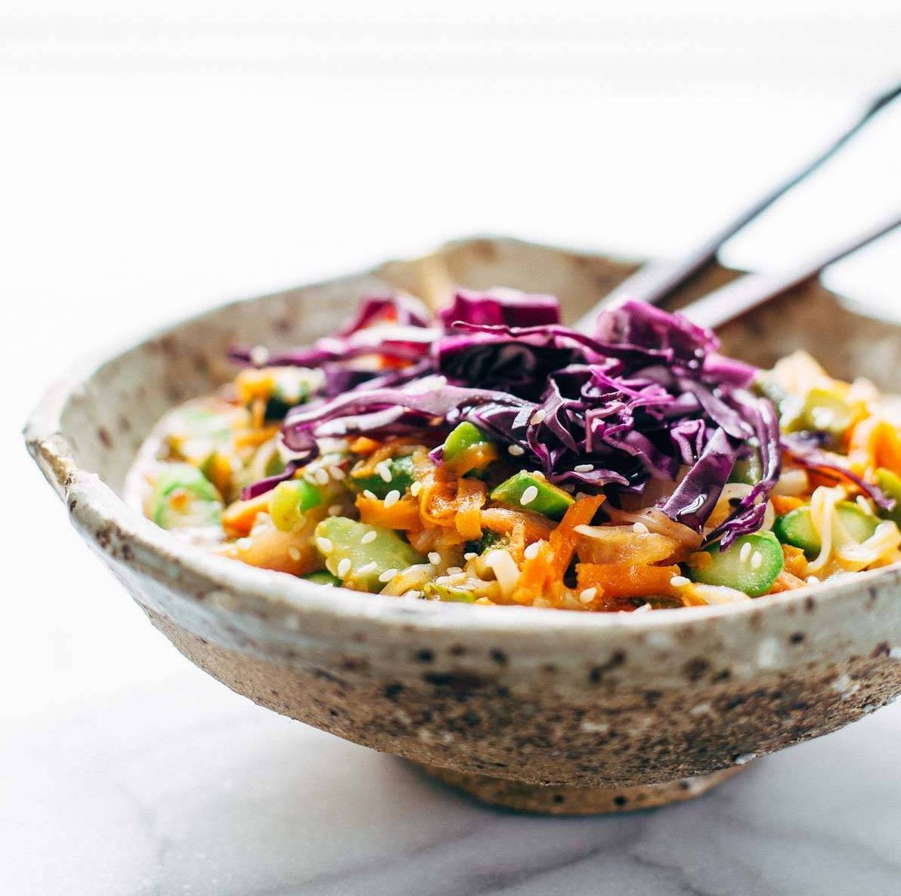

Coconut Curry Noodle Bowl

These Coconut Curry Noodle Bowls are quick to throw together
and packed with veggies and brown rice noodles. Healthy AND easy.
Recipe
Total time: 1 hour | Yield: 4 servings
Ingredients
For the coconut curry sauce:
- 1 tbs oil
- 2 shallots
- 1 tbs fresh ginger, minced
- 2 tbs red curry paste
- 1 14-oz can regular coconut milk
- 1/2 c chicken broth
- 3 tbs sugar
- 1 tbs hot chili paste
- 2 tbs fish sauce
- 2 tbs soy sauce
For the bowls:
- 4 oz rice noodles
- 1 tbs oil
- half an onion
- 1 c chopped broccoli
- 1 c shredded carrots
- 1 c chopped asparagus
- 1 c shredded purple cabbage
- sesame seeds for topping
- limes for serving
- fresh basil for serving
Instructions
- Noodles: Soak the noodles in a bowl of cold water.
Start this right away – they need at least 20 minutes or so of soaking.
When they’re soft, drain and rinse.
- Sauce: Heat the oil in a large saucepan. Add the shallots and ginger;
stir fry for 3-5 minutes. Add the curry paste; stir fry for 1 minute.
Add the coconut milk, sugar, chili paste, fish sauce, and soy sauce.
Simmer for 15 minutes or so while you prep the rest of the ingredients –
it should thicken slightly. If you’re adding the broth to make the sauce go
farther, you might need a little extra simmer time for the sauce to thicken.
- Vegetables and assembly: In a large skillet, heat the oil over high heat.
Add the onion, carrots, broccoli, and asparagus. Stir fry for about 5 minutes
until the broccoli and asparagus are bright green. Add the noodles and toss
around in the pan with the vegetables. Add the sauce and toss together until
just combined (if you cook it too long at this point, the noodles might get
too sticky). Serve topped with the purple cabbage and sesame seeds and a squeeze
of lime or basil leaves if you want.